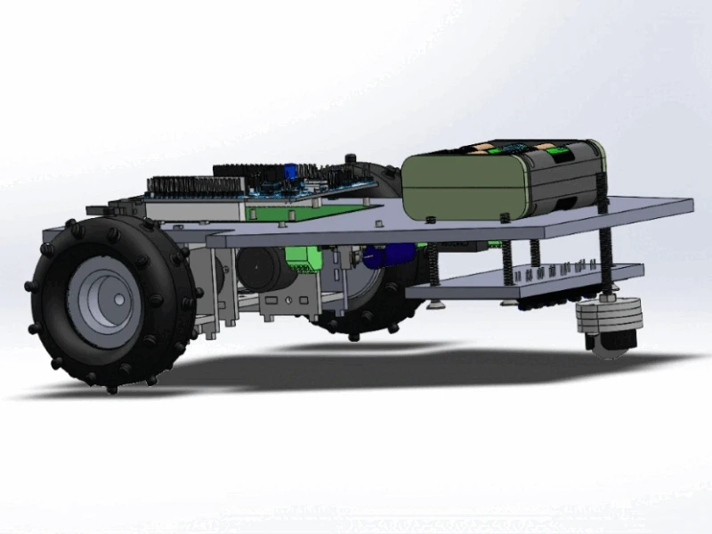

Mechatronics Projects
- Home
- Mechatronics Projects

Autonomous line-following buggy
- Performed characterization of the motor to determine the maximum torque, speed arm as well as operating voltage and frequency.
- Designed the buggy's chassis using SOLIDWORKS so it can be ready for laser cutting.
- Designed the sensor circuit using Altium Designer, testing a prototype on a stripboard before printing the PCB.
- Programed the buggy using C++ to implement a PID controller allowing the buggy to follow the white line on the track.
24-Hour Robotics-based Hackathon "Hack-A-Bot" - Extraterrestrial Rover Challenge (2nd place)
- Collaborated with a team of 4 to design and build a Bluetooth-teleoperated rover that can be controlled via PC based on the live feed on a camera mounted on the robot.
- Implemented a control algorithm for the robot using Arduino, and used servos to control the camera and object collection mechanism.
Microcontroller Engineering
- A PIC18F microcontroller using low-level assembly programming language to perform various tasks.
- programmed an STM32 microcontroller as a state machine to perform like a reconfigurable time alarm using C++ programming language.
Kinematics and Dynamics
- Used Lab View to analyse the DH parameters of the Phantom Omni joystick as well as determine its forward and inverse kinematics.
- Used MapleSim to simulate the movement 4-DOF elbow manipulator, which consists of revolute and prismatic joints.
- Simulated the KUKA robotic arm model from Maplesoft and planned its trajectory to plot a name in the air.